Introductory exercises with bioRad
Adriaan M. Dokter
Source:vignettes/rad_aero_19_answers.Rmd
rad_aero_19_answers.RmdThese course materials were developed for the 3d Radar Aeroecology Training School, Jul 30 - Aug 2 2019, University of Oklahoma, Norman, OK, USA.
1 Basic visualisation of radar scans in R
1.1 Preparation
Radar data needed for this practical can be downloaded here.
Follow bioRad’s install instructions, and install the latest development version to be fully up-to-date.
Execute each of the code examples provided below in RStudio, and try to complete the exercises.
# make sure you start with a fresh R session
# load the bioRad package
library(bioRad)
# check the package version
packageVersion("bioRad")## [1] '0.4.0.9243'Make sure you have the latest version (0.4.0.9243). If you have an older version, download and reinstall as follows:
All bioRad’s functions are documented in an extensive function refererence online, as well as in manual pages within R:
Start by making a new directory on your local machine that you will use for this practical:
# make a new local directory on your machine where to download data for this practical
# replace the string below with the path of that directory:
HOME <- "your/personal/working/directory/"
# check that the directory exists. If the next statement evaluates to FALSE, something went wrong: the directory does not exist or you didn't specify its path correctly
file.exists(HOME)
# we will make HOME our work directory, the default folder in which R will look
# for files, and where it will output newly generated files.
setwd(HOME)
# Finally, we set the local time zone to UTC, so all plotted time axes will be in UTC
Sys.setenv(TZ = "UTC")Your R session is now properly set up.
To work with US NEXRAD data, bioRad currently requires a working installation of Docker (Linux/Mac) or Docker for Windows (not Docker Toolbox, this is an older implementation of Docker for Windows operating systems that is not supported). If you managed to successfully install Docker, test whether it works:
# start your local Docker installation
# we first test whether R can communicate with Docker:
check_docker()## Running docker image with vol2bird version 0.4.0## [1] 0The message “running docker image with vol2bird version 0.4.0” indicates everything is working.
If you did not manage to install Docker, you will be able to continue with all of below exercises, but not be able to load NEXRAD data into R at this time.
1.2 The structure of polar volumes
# the bioRad package comes with an example radar volume file, that we will inspect first
# first locate this example file on our computer:
my_filename <- system.file("extdata", "volume.h5", package = "bioRad")
# print the local path of the volume file:
my_filename## [1] "/Library/Frameworks/R.framework/Versions/3.6/Resources/library/bioRad/extdata/volume.h5"# load the file into R:
my_pvol <- read_pvolfile(my_filename)
## print some information about the polar volume
my_pvol## Polar volume (class pvol)
##
## # scans: 3
## radar: SE50
## source: WMO:02606,RAD:SE50,PLC:Angelholm,NOD:seang,ORG:82,CTY:643,CMT:Swedish radar
## nominal time: 2015-10-18 18:00:00## [[1]]
## Polar scan (class scan)
##
## parameters: DBZH VRADH RHOHV ZDR PHIDP
## elevation angle: 0.5 deg
## dims: 480 bins x 360 rays
##
## [[2]]
## Polar scan (class scan)
##
## parameters: DBZH VRADH RHOHV ZDR PHIDP
## elevation angle: 1.5 deg
## dims: 480 bins x 360 rays
##
## [[3]]
## Polar scan (class scan)
##
## parameters: DBZH VRADH RHOHV ZDR PHIDP
## elevation angle: 2.5 deg
## dims: 480 bins x 360 raysExercise 1: Load the polar volume file, example_pvol.h5 from the files downloaded in section 1.1. Put it in your working directory and load it into R. What is the minimum and maximum scan elevation contained in the volume? And which scan parameters are available? (See manual page of the read_pvolfile() function for the nomenclature of various available quantities).
# The default summary information of a `pvol` object contains information
# on the scans (sweeps) and their moments:
my_pvol## Polar volume (class pvol)
##
## # scans: 11
## radar: SE50
## source: WMO:02606,RAD:SE50,PLC:Ängelholm,NOD:seang,ORG:82,CTY:643,CMT:Swedish radar
## nominal time: 2015-09-20 20:00:00# We can also extract the elevation angles from the polar volume as follows:
get_elevation_angles(my_pvol)## [1] 0.5 0.5 1.0 1.5 2.0 2.5 4.0 8.0 14.0 24.0 40.01.3 Plotting radar scans
# (if you haven't done so already) load the polar volume data from the example_pvol.h5 file you just downloaded
my_pvol <- read_pvolfile("example_pvol.h5")
# let's extract the third scan, which was collected at 1.5 degree elevation:
my_scan <- my_pvol$scans[[3]]
# print some information about this scan:
my_scan## Polar scan (class scan)
##
## parameters: TH VRADH DBZH ZDR RHOHV PHIDP
## elevation angle: 1 deg
## dims: 480 bins x 360 rays# let's plot the reflectivity factor parameter of the scan in a range - azimuth coordinate system:
plot(my_scan, param="DBZH")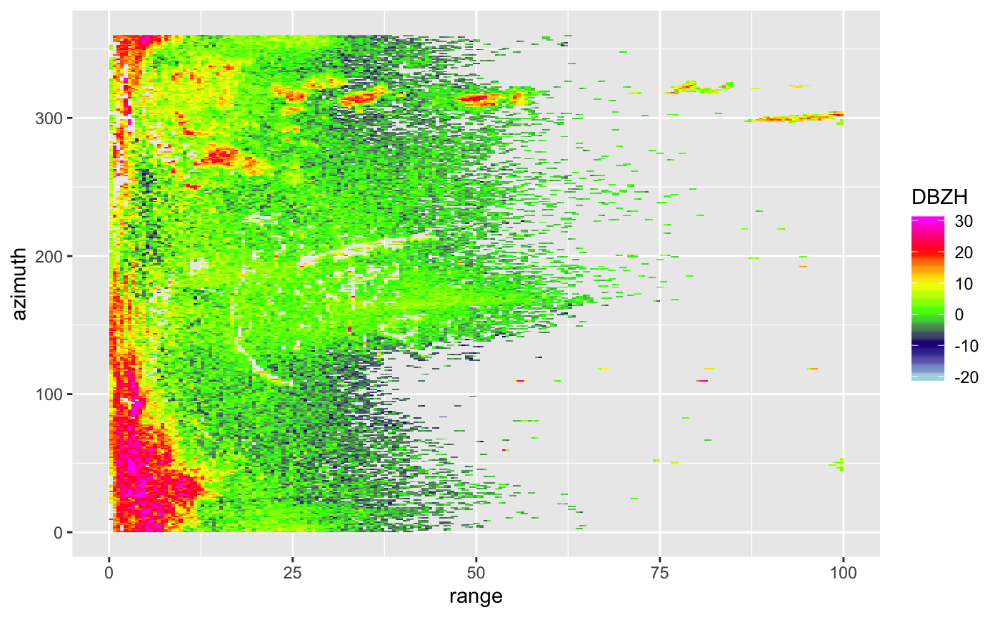
Usually it is more intuitive to explore radar scans as a PPI (plan position indicator), which is a projection of the scan on a Cartesian (X,Y) or (lat,lon) grid:
# before we can plot the scan, we need to project it on a Cartesian grid,
# i.e. we need to make a Plan Position Indicator (PPI)
my_ppi <- project_as_ppi(my_scan)
# print some information about this ppi:
my_ppi## Plan position indicator (class ppi)
##
## quantities: TH VRADH DBZH ZDR RHOHV PHIDP
## dims: 200 x 200 pixels# you can see we projected it on a 500 meter grid
# (check the manual of the project_as_ppi function to see how you can
# change the grid size (argument grid_size) and the maximum distance
# from the radar up to where to plot data (argument range_max))
#
# Now we are ready to plot the ppi, for example let's plot reflectivity factor DBZH:
plot(my_ppi, param = "DBZH")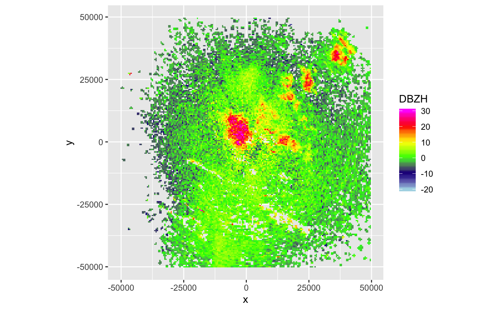
Exercise 2: This case contains convective precipitation, characterized by localized but intense thunderstorms, as well as biological scattering. Make also a ppi plot of the correlation coefficient (RHOHV) and radial velocity (VRADH). Verify how the texture of the radial velocity, and the values of correlation coefficient of the precipitative areas differs from the areas with biological scattering.
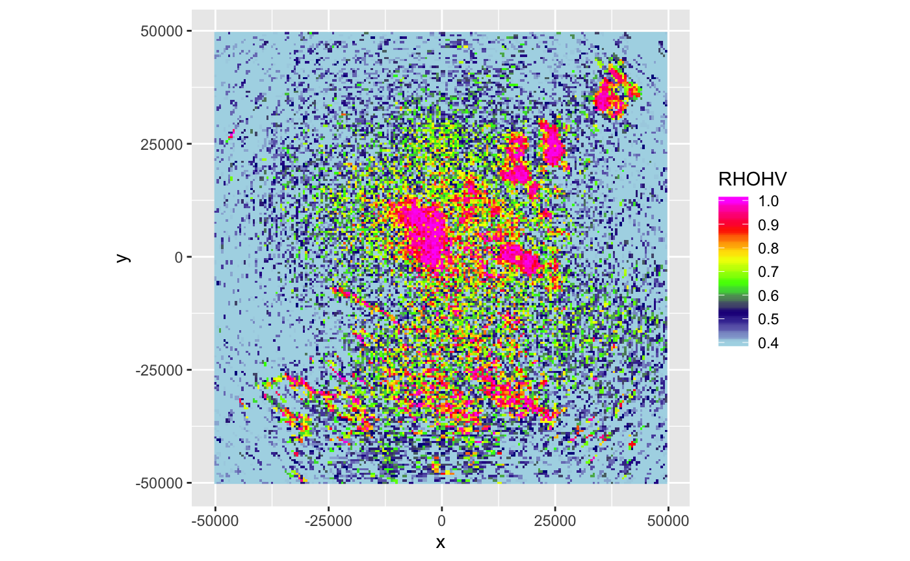
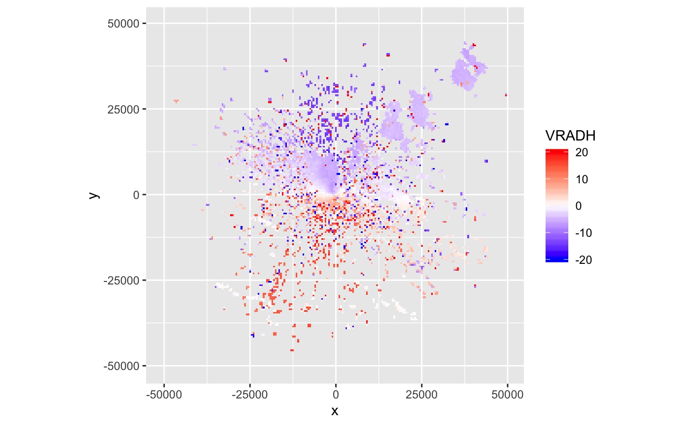
# Answer:
#
# The texture (spatial variability) of the radial velocity is considerably smoother
# in areas with precipitation than in areas with biology. Note: we see this especially
# at C-band radars (as in this example), at S-band the difference can be less clear.Exercise 3: Based on the radial velocity image, are the biological scatterers birds or insects? Why?
1.4 Overlaying radar scans on maps
# It is often informative to plot radar data on a base layer.
# first download the background image:
basemap <- download_basemap(my_ppi)## Downloading zoom = 9 ...## Source : http://tile.stamen.com/terrain/9/273/157.png## Source : http://tile.stamen.com/terrain/9/274/157.png## Source : http://tile.stamen.com/terrain/9/275/157.png## Source : http://tile.stamen.com/terrain/9/273/158.png## Source : http://tile.stamen.com/terrain/9/274/158.png## Source : http://tile.stamen.com/terrain/9/275/158.png## Source : http://tile.stamen.com/terrain/9/273/159.png## Source : http://tile.stamen.com/terrain/9/274/159.png## Source : http://tile.stamen.com/terrain/9/275/159.png# then overlay the PPI on the satellite image, restricting the color scale from -20 to 15 dBZ:
map(my_ppi, map = basemap, param = "DBZH", zlim = c(-20, 15))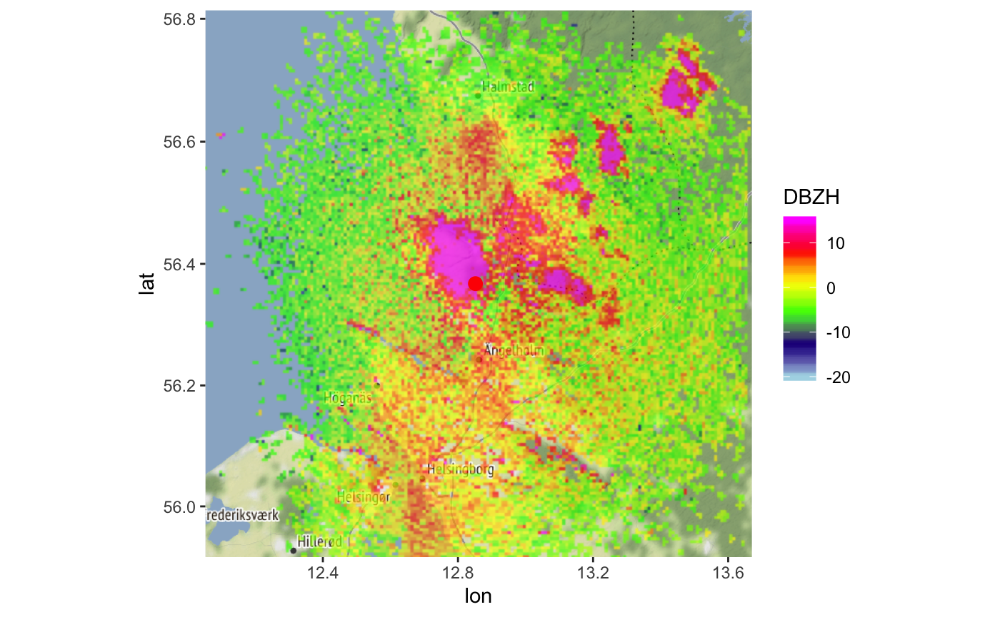
bioRad provides several functions to convert radar scans to other common spatial formats in R (cf. package raster and package sp), see scan_to_raster() and scan_to_spatial(), allowing you to process and overlay the radar data further with these spatial analysis toolkits.
2 Analysis and visualisation of vertical bird profiles
In this section you will learn to compute, interpret and analyze vertical profiles (vp). A vp consists of the (bird) density, speed and directions at different altitudes at the location of a single radar. It is typically calculated for all data within a cylinder of 35 km radius around the radar, i.e. only containing data at relatively short distances, where the radar beam is still sufficiently narrow to resolve altitude information.
Section 3 has examples that show how to process polar volume data into vertical profiles. To save time, we will start below with a list of pre-processed vertical profiles for the Brownsville radar in Texas (KBRO).
2.1 Loading processed vertical profiles
# Usually we would load processed vertical profiles (vp files) by:
# my_vplist <- read_vpfiles("./your/directory/with/processed/profiles/goes/here")
# my_vplist contains after running the command a list of vertical profile (vp) objects
# To save time, we load these data directly from file
load("KBRO20170514.RData")
# print the length of the vplist object. It should contain 95 profiles
length(my_vplist)## [1] 1152.2 Inspecting single vertical profiles
Now that you have loaded a list of vertical profiles, we can start exploring them. We will start with plotting and inspecting single vertical profiles, i.e. a single profile from the list of vp objects you have just loaded.
# let's extract a profile from the list, in this example the 41st profile:
my_vp <- my_vplist[[41]]
# print some info for this profile to the console
my_vp## Vertical profile (class vp)
##
## radar: KBRO
## source: RAD:KBGM,PLC:Brownsville
## nominal time: 2017-05-14 05:58:00
## generated by: vol2bird 0.3.17## [1] TRUE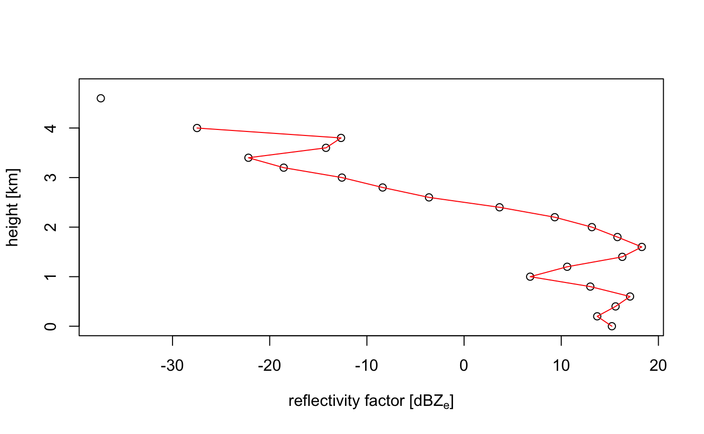
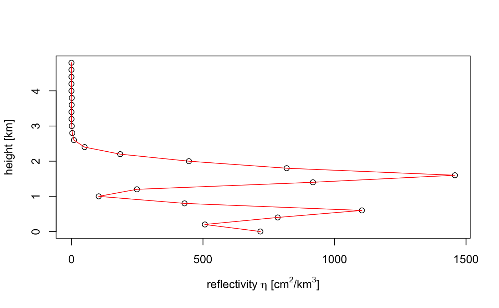
eta and dbz are closely related, the main difference is that reflectivity factors are logarithmic, and reflectivities linear. You can convert one into the other using eta_to_dbz() and dbz_to_eta() functions, which follow this simple formula:
eta = (radar-wavelength dependent constant) * 10^(dbz/10)The reflectivity factor dBZ is the quantity used by most meteorologist. It has the useful property that at different radar wavelengths (e.g. S-band versus C-band) the same amount of precipitation shows up at similar reflectivity factors. The same holds for insects, as well as any other target that is much smaller than the radar wavelength (S-band = 10 cm, C-band = 5 cm), the so-called Rayleigh-scattering limit.
In the case of birds we are outside the Rayleigh limit, because birds are of similar size as the radar wavelength. In this limit reflectivity eta is more similar between S-band and C-band. eta is also more directly related to the density of birds, since eta can be expressed as (bird density) x (radar cross section per bird). For these two reasons, for weather radar ornithologists not reflectivity factor dBZ but reflectivity eta is the more conventional unit.
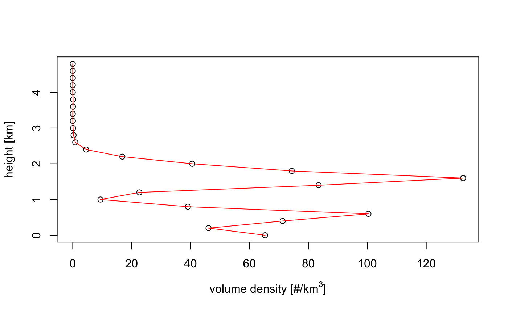
## [1] 11Exercise 4: If you change your assumption on the bird’s radar cross section in the previous example, and assume it is 10 times as large, what will be the effect on the bird density profile?
The radar cross section you assume can be changed as follows:
Exercise 5: Verify your answers on the previous two questions, by re-plotting the vertical profiles for the bird density quantity.
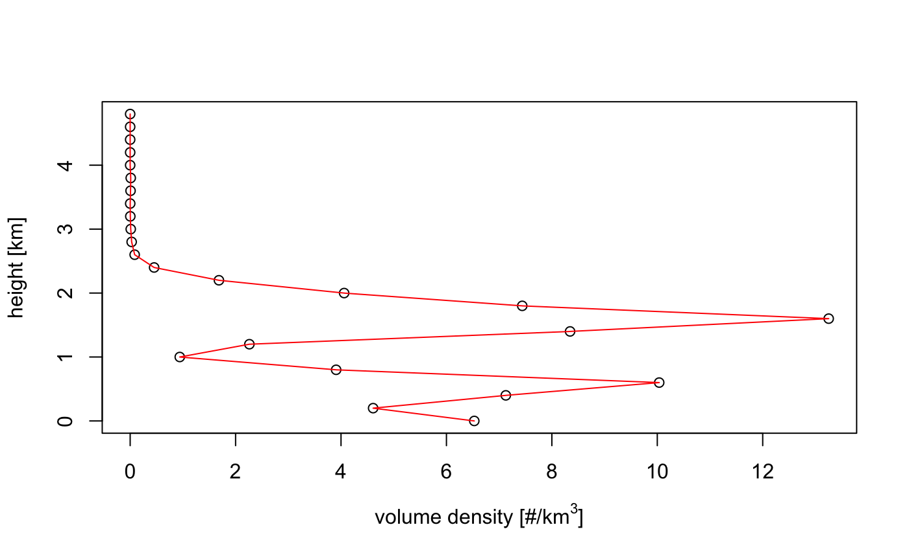
2.3 Plotting vertical profile time series
We will now examine multiple vertical profiles at once that are ordered into a time series, e.g. the vertical profiles obtained from a single radar over a full day.
# convert the list of vertical profiles into a time series:
my_vpts <- bind_into_vpts(my_vplist)
# print summary information
my_vpts## Irregular time series of vertical profiles (class vpts)
##
## radar: KBRO
## # profiles: 115
## time range (UTC): 2017-05-14 00:09:00 - 2017-05-14 23:34:00
## time step (s): min: 300 max: 2340# time series objects can be subsetted, just as you may be used to with vectors
# here we subset the first 50 timesteps:
my_vpts[1:50]## Irregular time series of vertical profiles (class vpts)
##
## radar: KBRO
## # profiles: 50
## time range (UTC): 2017-05-14 00:09:00 - 2017-05-14 06:54:00
## time step (s): min: 300 max: 1740# here we extract a single timestep, which gives you back a vertical profile class object:
my_vpts[100]## Vertical profile (class vp)
##
## radar: KBRO
## source: RAD:KBGM,PLC:Brownsville
## nominal time: 2017-05-14 16:03:00
## generated by: vol2bird 0.3.17## [1] "2017-05-14 00:09:00 UTC" "2017-05-14 00:28:00 UTC"
## [3] "2017-05-14 00:57:00 UTC" "2017-05-14 01:07:00 UTC"
## [5] "2017-05-14 01:17:00 UTC" "2017-05-14 01:27:00 UTC"
## [7] "2017-05-14 01:36:00 UTC" "2017-05-14 01:46:00 UTC"
## [9] "2017-05-14 01:56:00 UTC" "2017-05-14 02:06:00 UTC"
## [11] "2017-05-14 02:15:00 UTC" "2017-05-14 02:25:00 UTC"
## [13] "2017-05-14 02:35:00 UTC" "2017-05-14 02:45:00 UTC"
## [15] "2017-05-14 02:54:00 UTC" "2017-05-14 03:04:00 UTC"
## [17] "2017-05-14 03:14:00 UTC" "2017-05-14 03:24:00 UTC"
## [19] "2017-05-14 03:33:00 UTC" "2017-05-14 03:43:00 UTC"
## [21] "2017-05-14 03:53:00 UTC" "2017-05-14 04:03:00 UTC"
## [23] "2017-05-14 04:12:00 UTC" "2017-05-14 04:22:00 UTC"
## [25] "2017-05-14 04:32:00 UTC" "2017-05-14 04:37:00 UTC"
## [27] "2017-05-14 04:43:00 UTC" "2017-05-14 04:48:00 UTC"
## [29] "2017-05-14 04:53:00 UTC" "2017-05-14 04:59:00 UTC"
## [31] "2017-05-14 05:04:00 UTC" "2017-05-14 05:10:00 UTC"
## [33] "2017-05-14 05:15:00 UTC" "2017-05-14 05:20:00 UTC"
## [35] "2017-05-14 05:26:00 UTC" "2017-05-14 05:31:00 UTC"
## [37] "2017-05-14 05:37:00 UTC" "2017-05-14 05:42:00 UTC"
## [39] "2017-05-14 05:47:00 UTC" "2017-05-14 05:53:00 UTC"
## [41] "2017-05-14 05:58:00 UTC" "2017-05-14 06:03:00 UTC"
## [43] "2017-05-14 06:09:00 UTC" "2017-05-14 06:14:00 UTC"
## [45] "2017-05-14 06:20:00 UTC" "2017-05-14 06:25:00 UTC"
## [47] "2017-05-14 06:30:00 UTC" "2017-05-14 06:36:00 UTC"
## [49] "2017-05-14 06:48:00 UTC" "2017-05-14 06:54:00 UTC"
## [51] "2017-05-14 06:59:00 UTC" "2017-05-14 07:05:00 UTC"
## [53] "2017-05-14 07:10:00 UTC" "2017-05-14 07:15:00 UTC"
## [55] "2017-05-14 07:21:00 UTC" "2017-05-14 07:26:00 UTC"
## [57] "2017-05-14 07:31:00 UTC" "2017-05-14 07:37:00 UTC"
## [59] "2017-05-14 07:42:00 UTC" "2017-05-14 07:48:00 UTC"
## [61] "2017-05-14 07:53:00 UTC" "2017-05-14 07:58:00 UTC"
## [63] "2017-05-14 08:04:00 UTC" "2017-05-14 08:09:00 UTC"
## [65] "2017-05-14 08:14:00 UTC" "2017-05-14 08:20:00 UTC"
## [67] "2017-05-14 08:25:00 UTC" "2017-05-14 08:31:00 UTC"
## [69] "2017-05-14 08:36:00 UTC" "2017-05-14 08:41:00 UTC"
## [71] "2017-05-14 08:47:00 UTC" "2017-05-14 08:52:00 UTC"
## [73] "2017-05-14 08:57:00 UTC" "2017-05-14 09:03:00 UTC"
## [75] "2017-05-14 09:08:00 UTC" "2017-05-14 09:14:00 UTC"
## [77] "2017-05-14 09:23:00 UTC" "2017-05-14 09:33:00 UTC"
## [79] "2017-05-14 09:43:00 UTC" "2017-05-14 09:53:00 UTC"
## [81] "2017-05-14 10:02:00 UTC" "2017-05-14 10:12:00 UTC"
## [83] "2017-05-14 10:22:00 UTC" "2017-05-14 10:32:00 UTC"
## [85] "2017-05-14 10:41:00 UTC" "2017-05-14 10:51:00 UTC"
## [87] "2017-05-14 11:01:00 UTC" "2017-05-14 11:11:00 UTC"
## [89] "2017-05-14 11:20:00 UTC" "2017-05-14 11:30:00 UTC"
## [91] "2017-05-14 11:40:00 UTC" "2017-05-14 11:59:00 UTC"
## [93] "2017-05-14 12:29:00 UTC" "2017-05-14 12:56:00 UTC"
## [95] "2017-05-14 13:25:00 UTC" "2017-05-14 14:04:00 UTC"
## [97] "2017-05-14 14:33:00 UTC" "2017-05-14 14:55:00 UTC"
## [99] "2017-05-14 15:34:00 UTC" "2017-05-14 16:03:00 UTC"
## [101] "2017-05-14 16:32:00 UTC" "2017-05-14 17:02:00 UTC"
## [103] "2017-05-14 17:31:00 UTC" "2017-05-14 18:00:00 UTC"
## [105] "2017-05-14 18:29:00 UTC" "2017-05-14 18:59:00 UTC"
## [107] "2017-05-14 19:28:00 UTC" "2017-05-14 19:57:00 UTC"
## [109] "2017-05-14 20:26:00 UTC" "2017-05-14 20:56:00 UTC"
## [111] "2017-05-14 21:25:00 UTC" "2017-05-14 22:04:00 UTC"
## [113] "2017-05-14 22:33:00 UTC" "2017-05-14 23:04:00 UTC"
## [115] "2017-05-14 23:34:00 UTC"## Warning in plot.vpts(my_vpts): Irregular time-series: missing profiles will
## not be visible.Use 'regularize_vpts' to make time series regular.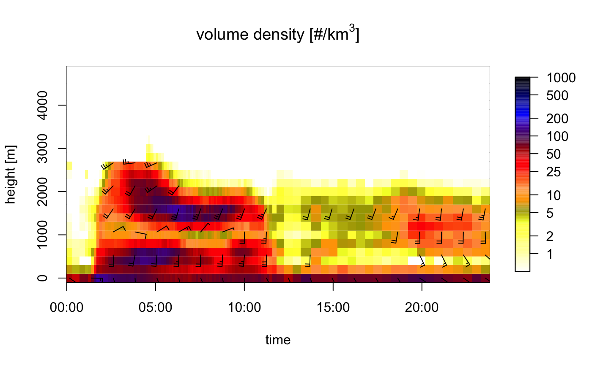
# check the help file for the plotting function of profile time series
# Because profile timeseries are of class 'vpts', it's associated plotting function
# is called plot.vpts:
?plot.vptsLet’s make a plot for a subselection of the time series:
# make a subselection for night time only
index_night <- check_night(my_vpts)
# index_night is a logical vector that specifies each profile whether it occurred at night or not:
index_night## [1] FALSE FALSE FALSE TRUE TRUE TRUE TRUE TRUE TRUE TRUE TRUE
## [12] TRUE TRUE TRUE TRUE TRUE TRUE TRUE TRUE TRUE TRUE TRUE
## [23] TRUE TRUE TRUE TRUE TRUE TRUE TRUE TRUE TRUE TRUE TRUE
## [34] TRUE TRUE TRUE TRUE TRUE TRUE TRUE TRUE TRUE TRUE TRUE
## [45] TRUE TRUE TRUE TRUE TRUE TRUE TRUE TRUE TRUE TRUE TRUE
## [56] TRUE TRUE TRUE TRUE TRUE TRUE TRUE TRUE TRUE TRUE TRUE
## [67] TRUE TRUE TRUE TRUE TRUE TRUE TRUE TRUE TRUE TRUE TRUE
## [78] TRUE TRUE TRUE TRUE TRUE TRUE TRUE TRUE TRUE TRUE TRUE
## [89] TRUE TRUE TRUE FALSE FALSE FALSE FALSE FALSE FALSE FALSE FALSE
## [100] FALSE FALSE FALSE FALSE FALSE FALSE FALSE FALSE FALSE FALSE FALSE
## [111] FALSE FALSE FALSE FALSE FALSE# now subset our vpts using this selection:
my_vpts_night <- my_vpts[index_night]
# plot this smaller time series:
plot(my_vpts_night)## Warning in plot.vpts(my_vpts_night): Irregular time-series: missing
## profiles will not be visible.Use 'regularize_vpts' to make time series
## regular.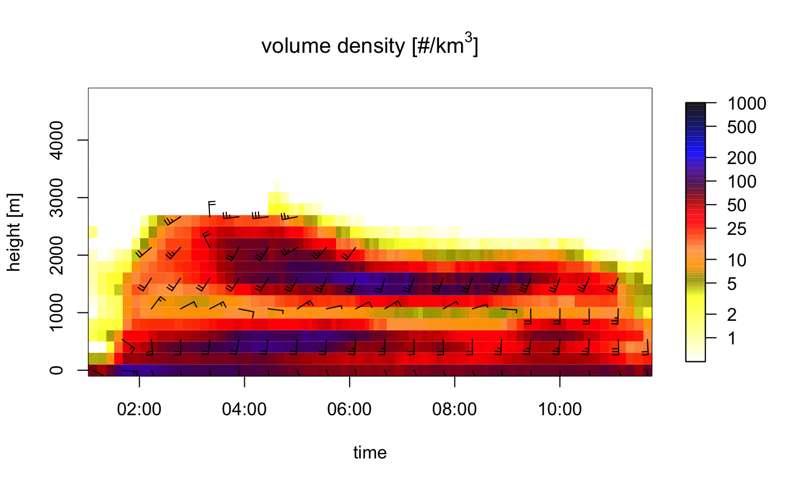
Exercise 6: Interpret the wind barbs in the profile time series figure: what is the approximate speed and direction at 1500 meter at 6 UTC? In the speed barbs, each half flag represents 2.5 m/s, each full flag 5 m/s, [each pennant (triangle) 25 m/s, not occurring in this case].
# Answer:
#
# At 1500 meter 6 UTC the wind barbs have 2 full flags and one half flag.
# Therefore the ground speed is approximately 2x5 + 2.5 = 12.5 m/s.Exercise 7: Extract the vertical profile at 6 UTC from the time series and plot the vertical profile of ground speed (quantity ff). Hint: use function filter_vpts() to extract the 6 UTC profile. Check whether your answer to the previous question was approximately correct.
# First extract the profile at 6 UTC:
vp_6UTC <- filter_vpts(my_vpts_night, nearest="2017-05-14 06:00")
plot(vp_6UTC, quantity = "ff")
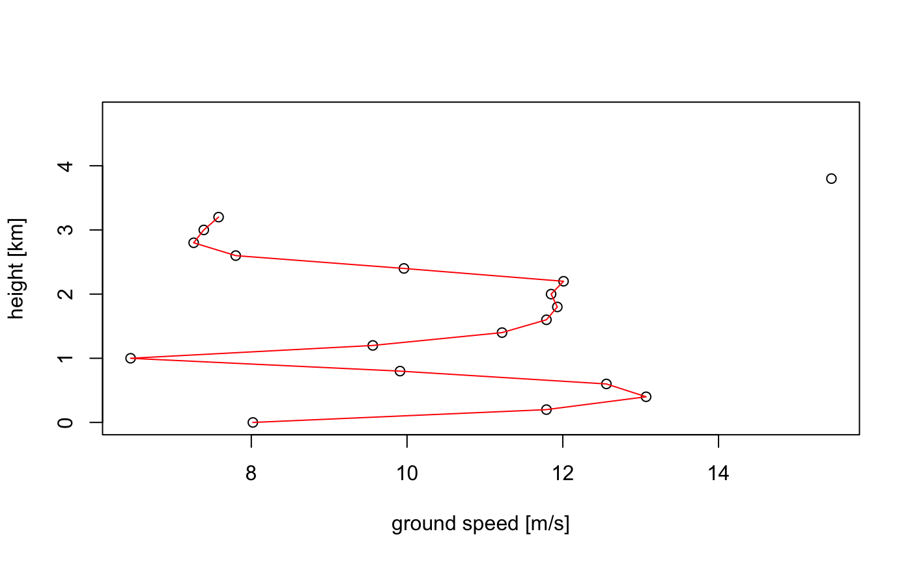
2.4 Vertical and time integration of profiles
Often you will want to sum together all the migrants in the vertical dimension, for example if you want a single index of how many birds are migrating at a certain instant. There are at least two ways in which you can do that:
- by calculating the vertically integrated bird density (VID), which is surface density as opposed to a volume densities you have been plotting in the previous exercises: this number gives you how many migrants are aloft per square kilometer earth’s surface (unit individuals/km\(^{2}\)), and is a vertical integration of the volume densities(unit individuals/km\(^{3}\)).
- Note that the VID quantity doesn’t depend on the speed of the migrants. A common measure that reflects both the density and speed of the migration is migration traffic rate (MTR). This is flux measure that gives you how many migrants are passing the radar station per unit of time and per unit of distance perpendicular to the migratory direction (unit individuals/km/hour).
We will be using bioRad’s integrate_profile() function to calculate these quantities:
# Let's continue with the vpts object created in the previous example.
# The vertically integrated quantities are calculated as follows:
my_vpi <- integrate_profile(my_vpts)
# The my_vpi object you created is a vpi class object, which is an acronym for "vertical profile integrated". It has its own plot method, which by default plots migration traffic rate (MTR):
plot(my_vpi)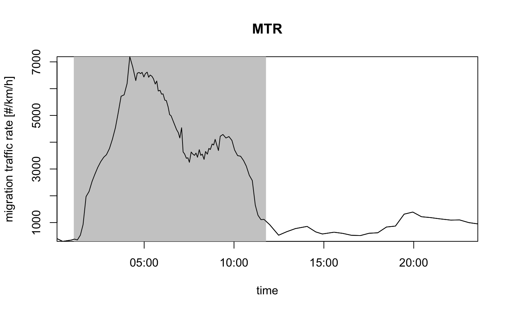
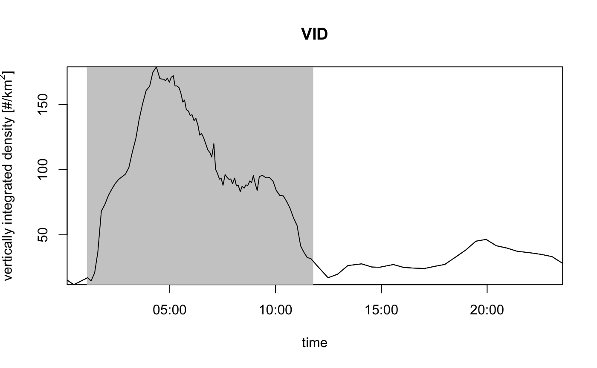
# the gray and white shading indicates day and night, which is calculated
# from the date and the radar position. You can also turn this off:
plot(my_vpi, night_shade = FALSE)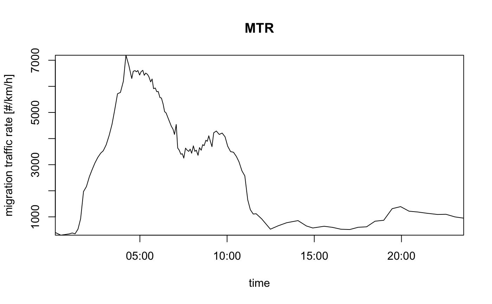
# plot the cumulative number of birds passing the radar, i.e. migration traffic (mt):
plot(my_vpi, quantity = "mt")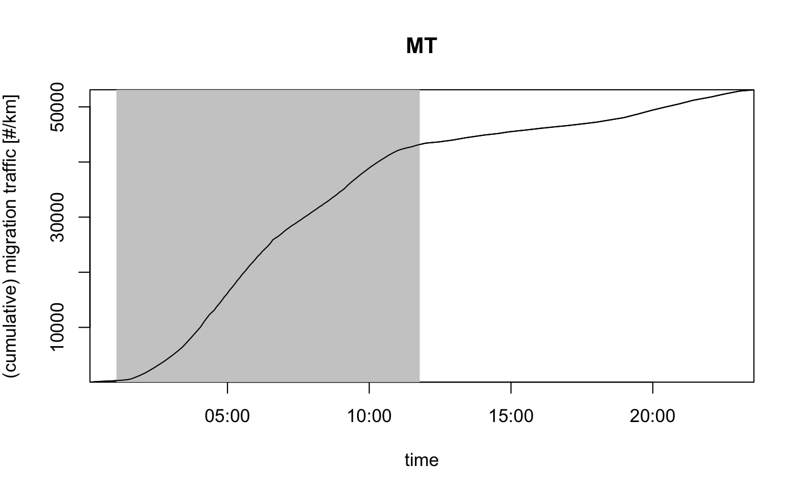
The following questions only require pen and paper. Assume a night migration event in which the volume density of birds from 0-1 km above ground is 200 birds per cubic kilometer, and from 1-1.5 km 100 birds per cubic kilometer. In the lower layer birds fly at 50 km/hour, and in the upper layer at 100 km/hour. Above 1500 meter there are no birds. Migration continues for exactly three hours after sunset, and then halts abruptly.
Exercise 8: What is in this case the bird’s vertically integrated density (VID)? Give your answer in units birds/km\(^2\).
# Answer:
#
# VID = (200 birds / km^3) * (1 km) + (100 birds / km^3) * (0.5 km)
# = 250 birds / km^2Exercise 9: What is in this case the migration traffic rate across a transect perpendicular to the direction of movement? Give your answer in units birds/km/hour.
# Answer:
#
# MTR = (200 birds / km^3) * (50 km / hour) * (1 km) + (100 birds / km^3) * (100 km / hour) * (0.5 km)
# = 10000 birds / km / hour + 5000 birds / km / hour
# = 15000 birds / km / hourExercise 10: How many birds have passed a 1km transect perpendicular to the direction of movement in this night? Give your answer in terms of migration traffic (mt) in units birds/km.
Both MTR, VID and MT depend on the assumed radar cross section (RCS) per bird. If you are unwilling/unable to specify RCS, you can alternatively use two closely related quantities that make no assumptions RCS:
# instead of vertically integrated density (VID), you can use vertically integrated reflectivity (VIR):
plot(my_vpi, quantity = "vir")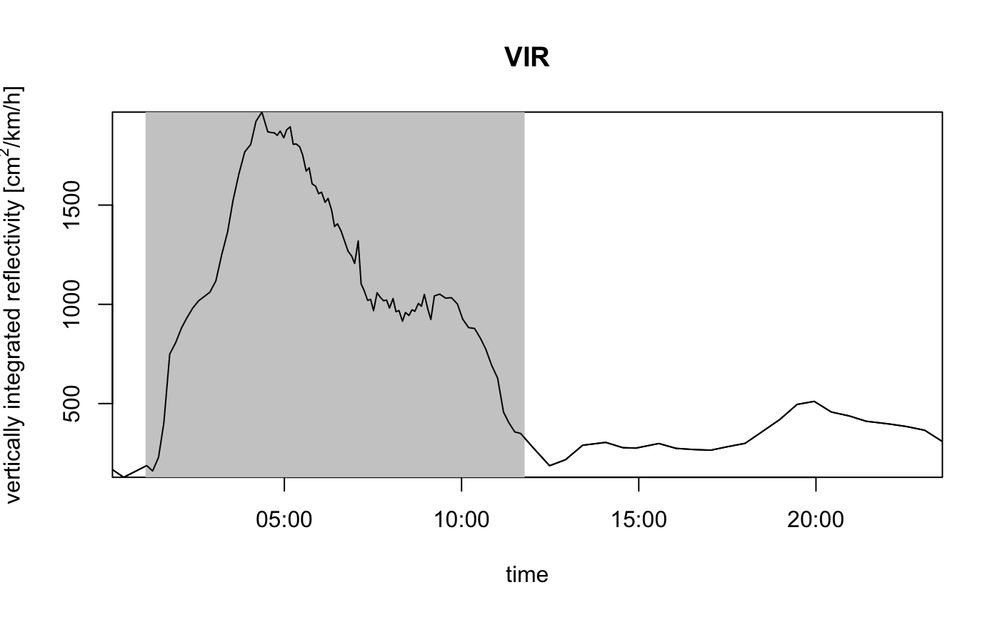
# instead of migration traffic rate (MTR), you can use the reflectivity traffic rate (RTR):
plot(my_vpi, quantity = "rtr")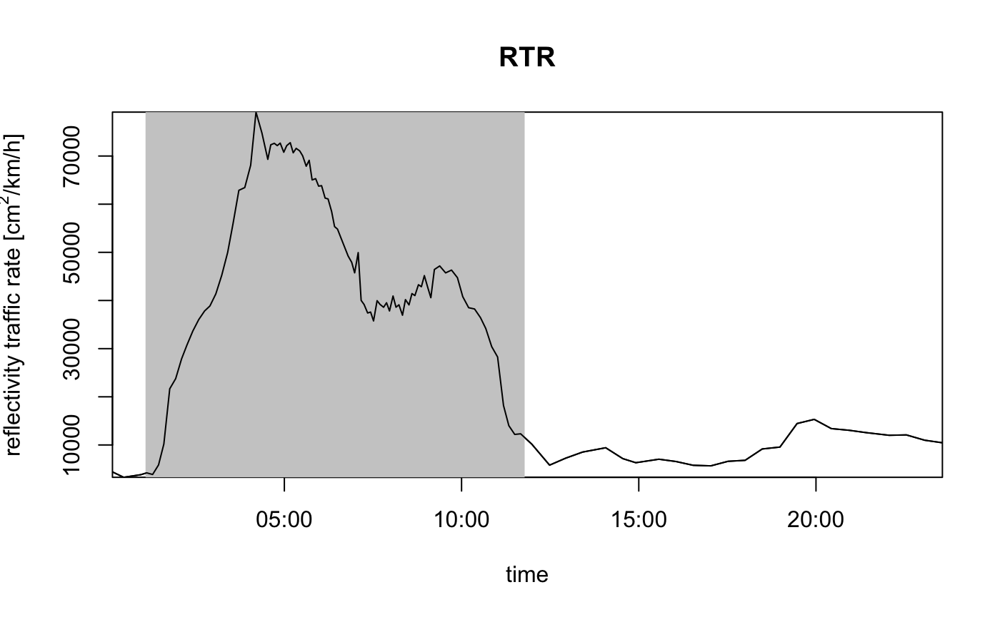
# instead of migration traffic (MT), you can use the reflectivity traffic (RT):
plot(my_vpi, quantity = "rt")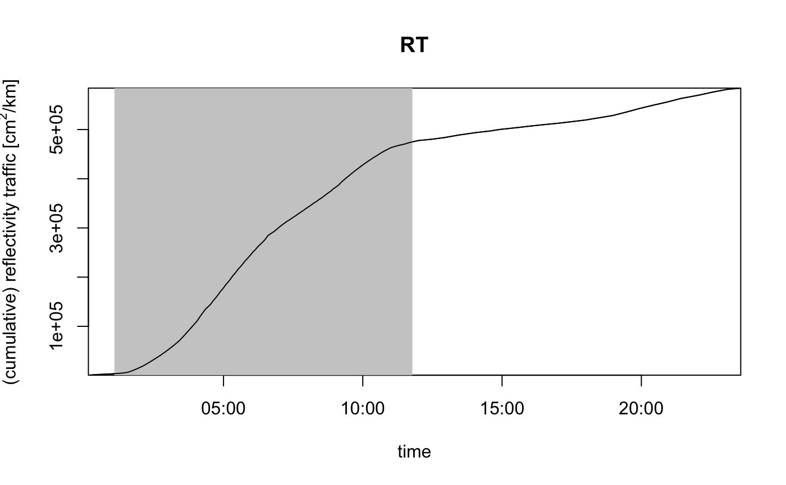
VIR gives you the total cross-sectional area of air-borne targets per square kilometer of ground surface, whereas RTR gives you the total cross-sectional area of targets flying across a one kilometer line perpendicular to the migratory flow per hour.
2.5 Inspecting precipitation signals in profiles
Precipitation is known to have a major influence on the timing and intensity of migration, therefore it is a useful skill to be able to inspect profiles for presence of precipitation.
Also, although automated bird quantification algorithms become more and more reliable, distinguishing precipitation from birds remains challenging for algorithms in specific cases. It is therefore important to have the skills to inspect suspicious profiles. That may help you to identify potential errors of the automated methods, and prevent your from overinterpreting the data.
An easy way of doing that is plotting the vertical profile of total reflectivity (quantity DBZH), which includes everything: birds, insects and precipitation. Precipitation often has higher reflectivities than birds, and also extends to much higher altitudes.
# load a time series for the KBGM radar in Binghamton, NY
load("KBGM20170527-20170602.RData")
# print the loaded vpts time series for this radar:
my_vpts## Regular time series of vertical profiles (class vpts)
##
## radar: KBGM
## # profiles: 284
## time range (UTC): 2017-05-27 08:31:00 - 2017-06-02 04:00:00
## time step (s): 1770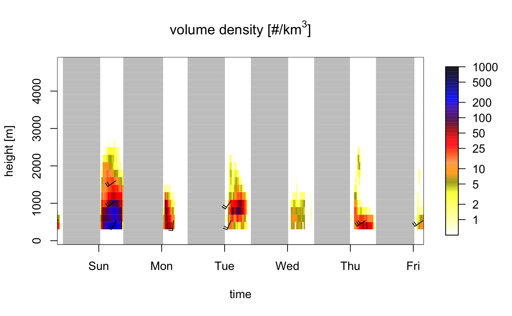
Exercise 11: Compare the above plot for bird density (quantity dens) with a profile plot for total reflectivity (quantity DBZH, showing birds and precipitation combined). Compare the two plots to visually identify periods and altitude layers with precipitation.
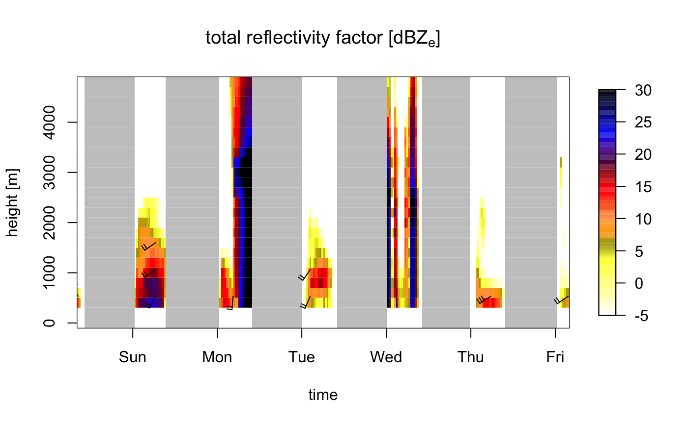
3 Processing polar volume data into profiles
3.1 Obtaining radar data
- US NEXRAD polar volume data can be accessed in the Amazon cloud.
- European radar data can be accessed at http://enram.github.io/data-repository/. These are processed vertical profiles, the full polar volume data are not openly available for most countries.
The names of the radars in the networks can be found here:
- US: NEXRAD network
- Europe: OPERA database
Useful sites for inspecting pre-made movies of the US composite are http://birdcast.info/live-migration-maps/ and http://www.pauljhurtado.com/US_Composite_Radar/.
3.2 Processing a single polar volume with the vol2bird algorithm
The following steps take you through the process applying the vol2bird algorithm yourself. You need a working installation of Docker (Linux/Mac) or Docker for Windows (not Docker Toolbox, this is an older implementation of Docker for Windows operating systems that is not supported).
We will generate vertical profiles with the automated algorithm vol2bird (https://github.com/adokter/vol2bird), which is included in the bioRad package.
# start your local Docker installation
# we first test whether R can communicate with Docker:
check_docker()If you get a “Hello from Docker!” welcome message, everything is working and you can start processing.
# download a polar volume file you want to process and put it in your home directory.
my_file <- "write_your_file_to_be_processed_here"
# Alternatively, continue with the polar volume that comes with the package:
my_file <- system.file("extdata", "volume.h5", package = "bioRad")
# run vol2bird
# we set autoconf to TRUE, to let vol2bird figure out the optimal settings by itself
my_vp <- calculate_vp(my_file, autoconf = TRUE)
# vp is now a 'vp' profile object, that you can examine as in the previous exercises
# alternatively, you may also store the profile as a hdf5 file, which is what we will do next:
calculate_vp(my_file, "my_vpfile.h5", autoconf = TRUE)
# your work directory should now contain a new file 'my_vpfile.h5'
# check that we can read this file, and retrieve the vertical profile from it:
vp <- read_vpfiles("my_vpfile.h5")3.3 Processing multiple polar volumes
This section contains an example for processing a directory of polar volumes into profiles:
# read the filenames of the polar volumes you want to process
my_files <- list.files("your/directory/with/volumes/goes/here/", full.names = TRUE)
# print the filenames
my_files
# create output directory for processed profiles
outputdir <- "~/processed_data"
dir.create(outputdir)
# let's loop over the files and generate profiles
for (file_in in my_files) {
# generate the output filename for the input file
file_out <- paste(outputdir, "/", basename(file_in), "_vp.h5", sep = "")
# generate the profile, and write it as a hdf5 file (for later reference)
# we turn autoconfiguration on, so vol2bird chooses the optimal settings for the file automatically
vp <- calculate_vp(file_in, file_out, autoconf = TRUE)
}Having generated the profiles, we can read them into R:
# we assume outputdir contains the path to the directory with processed profiles
my_vpfiles <- list.files(outputdir, full.names = TRUE)
# print them
my_vpfiles
# read them
my_vplist <- read_vpfiles(my_vpfiles)You can now continue with visualizing and post-processing as we did earlier: